<!DOCTYPE html>
<html lang="en">
  <head>
    <meta charset="UTF-8" />
    <meta name="viewport" content="width=device-width, initial-scale=1.0" />
    <meta http-equiv="X-UA-Compatible" content="ie=edge" />
    <meta
      name="description"
      content="A Debreceni Irodalom Háza honlapja Tar Sándor íróról."
    />
    <meta name="robots" content="index,follow" />
    <link rel="icon" href="../img/favicon.ico" />
    <link
      href="https://fonts.googleapis.com/css2?family=Anton&family=Lobster&family=Montserrat&family=Roboto:wght@400;700;900&display=swap"
      rel="stylesheet"
    /> 
    <link rel="preconnect" href="https://fonts.gstatic.com">
    <link href="https://fonts.googleapis.com/css2?family=Kelly+Slab&display=swap" rel="stylesheet"> 
    <link rel="stylesheet" href="../styles/style.css" />
    <link rel="stylesheet" href="https://cdnjs.cloudflare.com/ajax/libs/font-awesome/5.15.2/css/all.min.css">

    <title>Tar Sándor | Életút</title>
  </head>
</html>
</head>
<body>
  
  <header class="main-head">
    
    <nav>
      <div id="logo">
        <a href="../index.html"> 
  
  
          
        </a>
      </div>
      <ul id="main-nav">
        <li><a class="current" href="./index.html">Életút</a></li>
        <li><a id="underline" href="../muvek/muvek-main.html">Művek</a></li>
        <li><a id="underline" href="../gallery/index.html">Fotók</a></li>
        <li><a id="underline" href="../hanganyagok/index.html">Hanganyagok</a></li>
        <li><a id="underline" href="../tarrol/tarrol.html">T.S.-ról</a></li>
      </ul>

<!-- Burger nav-------------------------------->

          
      <div class="burger-container">
        <nav class="navbar">
            <ul class="nav-links">
                <li><a href="../eletut/index.html"">Életút</a></li>
                <li><a href="../muvek/muvek-main.html">Művek</a></li>
                <li><a href="../gallery/index.html">Fotók</a></li>
                <li><a href="../hanganyagok/index.html">Hanganyagok</a></li>
                <li><a href="../tarrol/tarrol.html">T.S.-ról</a></li>
                <li><a href="../impresszum.html">Impresszum</a></li>

              
            </ul>
            <i class="fas fa-bars fa-2x" id="burger"></i>
        </nav>
        
      </div>


<!-- Burger nav end--------------------------->

    </nav>
    
  </header>

  <main>
    <div class="timeline-container" id="timeline-1">
        <div class="timeline-header">
          <!--<h2 class="timeline-header__title">Életút</h2>-->
        </div>
        <div class="timeline">
          <div class="timeline-item" data-text="A munkás">
            <div class="timeline__content">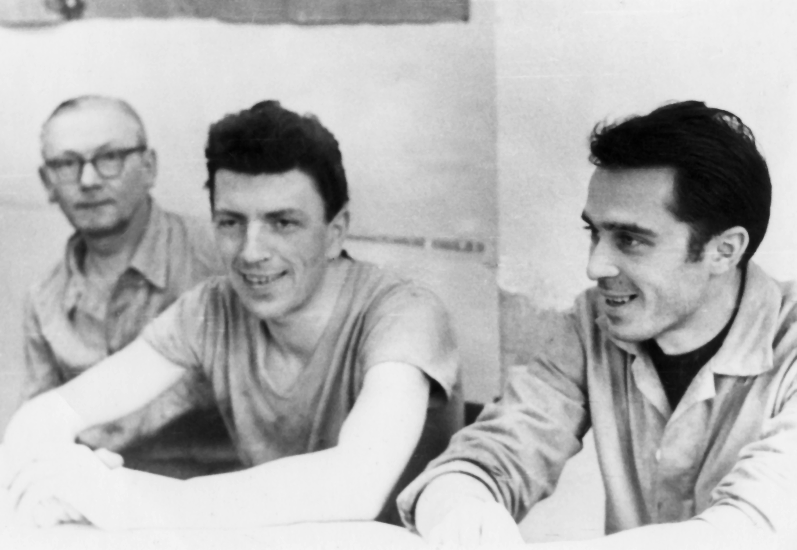
              <h2 class="timeline__content-title">1959-1961</h2>
              <p class="timeline__content-desc">- VI. 23. - VII. 23.: Debreceni Gázmű, műszaki rajzoló<br>- VII. 25. - VIII. 24.: Gördülőcsapágy Gyár, köszörűs<br>VII. 26. - : Debreceni Orvosi Műszergyár, technikus<br>VIII. 26 - 1961. X. 13.: melegműhelyi meós</p>
            </div>
          </div>
          <div class="timeline-item" data-text="A katona">
            <div class="timeline__content">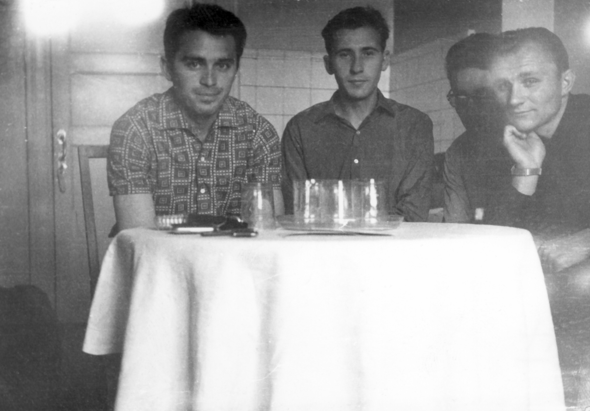
              <h2 class="timeline__content-title">1961-1963</h2>
              <p class="timeline__content-desc">1961. X. 13. - 1963. XI. 1.: hadsereg</p>
            </div>
          </div>
          <div class="timeline-item" data-text="A munkás">
            <div class="timeline__content">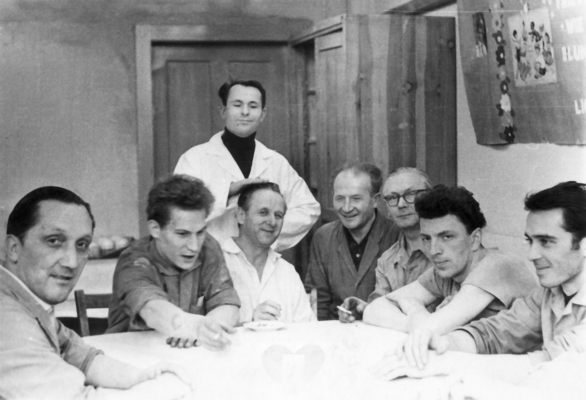
              <h2 class="timeline__content-title">1963-1967</h2>
              <p class="timeline__content-desc">1965. VI. 1. - 1965. VI. 1.: faforgácsoló meós<br>1965. VII. 13. - 1966. VII. 13.: faforgácsoló művezető<br>1965. VII. 13. - 1966. VII. 1.: fecskendő művezető<br>1966. VII. 1. - 1967. XI. 16.: tmk diszpécser</p>
            </div>
          </div>
          <div class="timeline-item" data-text="NDK">
            <div class="timeline__content">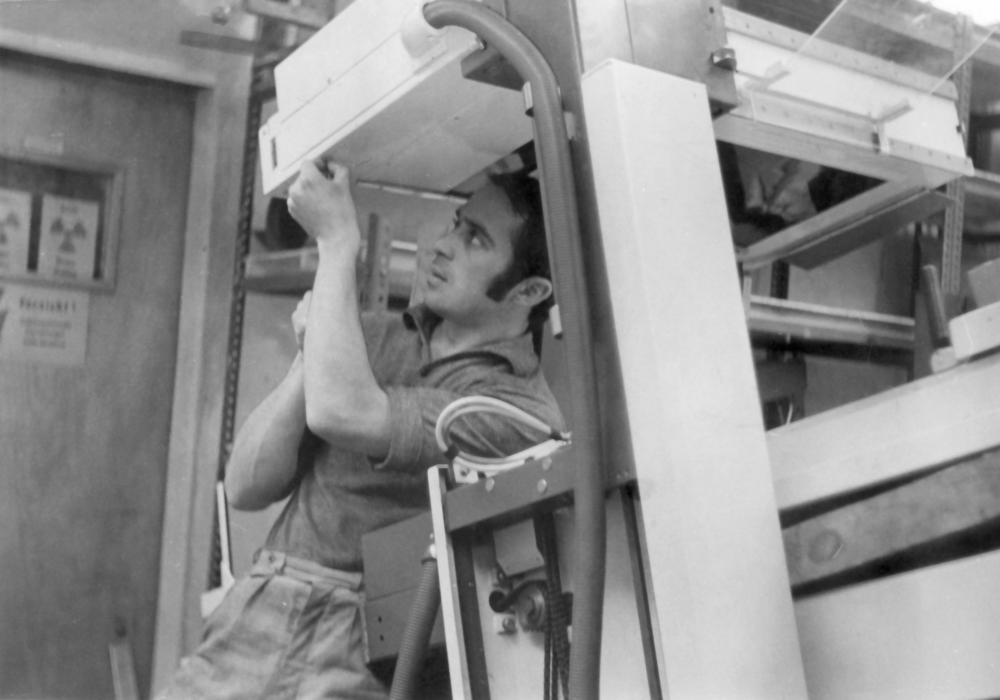
              <h2 class="timeline__content-title">1967-1970</h2>
              <p class="timeline__content-desc">1967. XI. 16. - 1970. X. 12.: VEB Trafo- und Röntgenwerk, Dresden, betanított munkás</p>
            </div>
          </div>
          <div class="timeline-item" data-text="Újra itthon">
            <div class="timeline__content">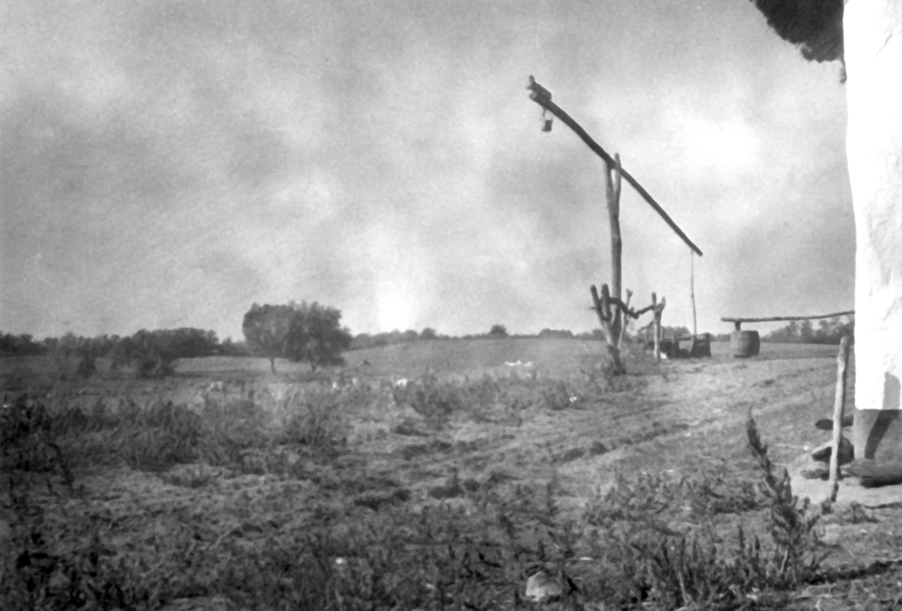
              <h2 class="timeline__content-title">1970-1975</h2>
              <p class="timeline__content-desc">1970. X. 12. - 1970. XI. 15.: tmk technikus<br>1970. XI. 15. - 1971. X. 1.: készülék-üzemtechnológus<br>1971. X. 1. - 1973. IV. 1.: készülék művezető (műtőlámpa szerelde)<br>1971. IV. 1. - 1975. IV. 1.: készülék üzemvezető-helyettes<br><strong>1974: Kiváló dolgozó</strong><br>1975. IV. 1. - 1975. VIII. 31.: készülék-üzemtechnológus<br></p>
            </div>
          </div>
          <div class="timeline-item" data-text="NDK II.">
            <div class="timeline__content">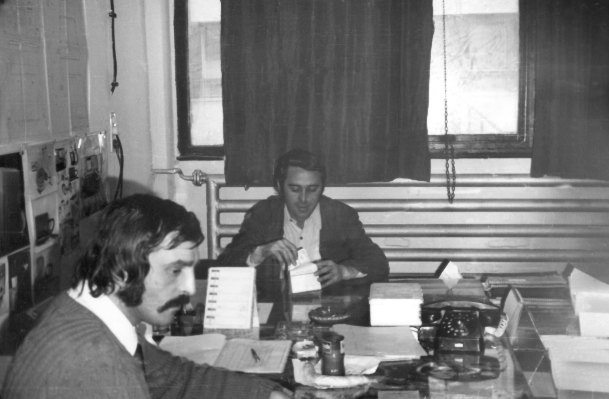
              <h2 class="timeline__content-title">1975-1976</h2>
              <p class="timeline__content-desc">1975. IX. 1. - 1976. IX. 15.: VEB Trafo- und Röntgentwerk, Dresden, otthonnevelő</p>
            </div>
          </div>
          <div class="timeline-item" data-text="Az író">
            <div class="timeline__content">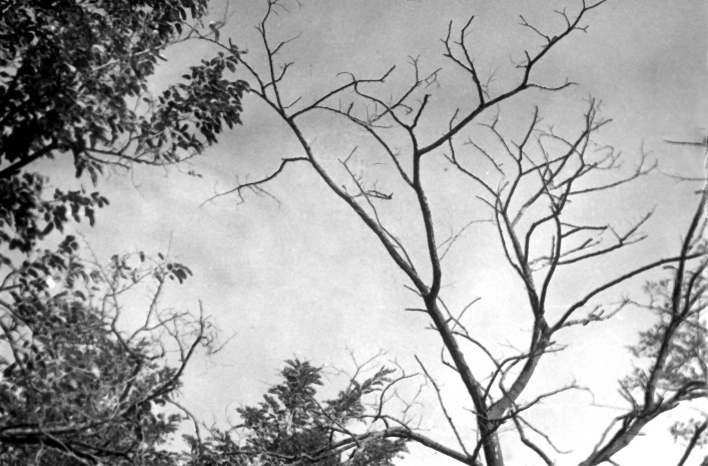
              <h2 class="timeline__content-title">1976-1986</h2>
              <p class="timeline__content-desc">1976: A Mozgó Világ szociográfiai pályázatának első díja<br>1980: Aszú díj (Mozgó Világ)<br><span style="color: #ffa959;">1981: A 6714-es személy (elbeszélések), Budapest, Magvető</span><br>1981: A Művészeti Alap Elsőkötetesek díja<br>1985: Déry-jutalom<br>1986: Soros-ösztöndíj</p>
            </div>
          </div>
          <div class="timeline-item" data-text="A munkás">
            <div class="timeline__content">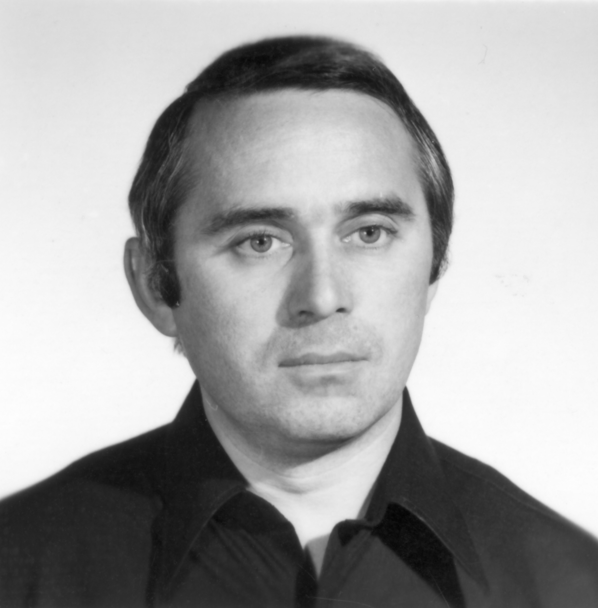
              <h2 class="timeline__content-title">1976-1992</h2>
              <p class="timeline__content-desc">
                1976. IX. 15. - 1988 (?): tmk munkaadagoló<br>
                1980: Törzsgárda Tag arany fokozata<br>
                1985: Törzsgárda Tag ezüst fokozata<br>
                1988 (?) - 1992. I. 1.: kódoló

              </p>
            </div>
          </div>
          <div class="timeline-item" data-text="Az író">
            <div class="timeline__content">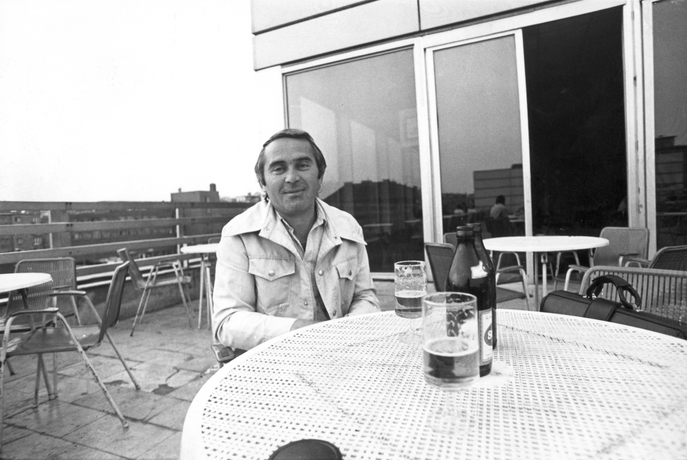
              <h2 class="timeline__content-title">1989-1992</h2>
              <p class="timeline__content-desc"><span style="color: #ffa959;">1989: Miért jó a póknak? (elbeszélések), Budapest, Szépirodalmi Kiadó</span><br>
              1989: A jövő irodalmáért jutalom<br>
              1989: Darvas József Irodalmi Emlékdíj<br>
              1990: Artisjus irodalmi díj<br>
              1992: A Művészeti Alap irodalmi díja<br>
              1992: Celofánvirágok, Kenyeres Gábor tévéjátéka
              </p>
            </div>
          </div>
          <div class="timeline-item" data-text="Főállású író">
            <div class="timeline__content">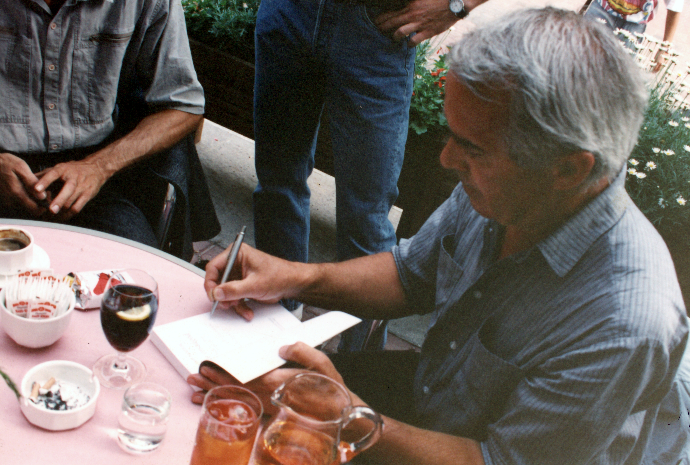
              <h2 class="timeline__content-title">1992-1993</h2>
              <p class="timeline__content-desc">1992. II. 25. - 1994. I. 1. munkanélküli<br>
                <span style="color: #ffa959;">1993: Ennyi volt (novellák), Budapest, Cégér Kiadó</span><br>
                1993: Debrecen Kultúrájáért Díj<br>
                1993: Alföld-díj<br>
                <span style="color: #ffa959;">1993: A te országod (válogatott és új novellák), Budapest, Századvég</span>

              </p>
            </div>
          </div>
          <div class="timeline-item" data-text="Beszélő Kiadó munkatársa">
            <div class="timeline__content">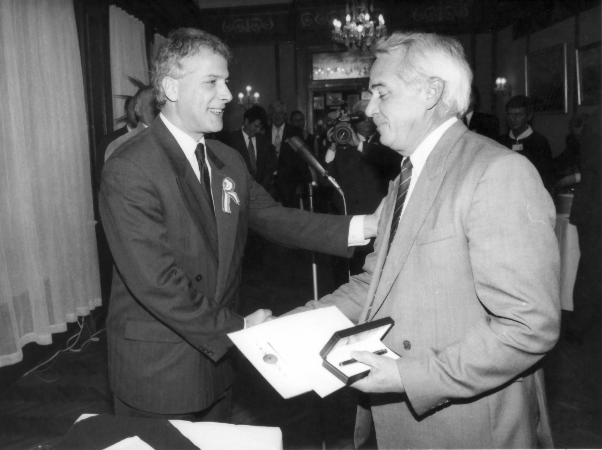
              <h2 class="timeline__content-title">1994-2000</h2>
              <p class="timeline__content-desc">
                1994: I. 1.: Beszélő Kiadó Kft. munkatársa<br>
                1994: Nagy Lajos-díj<br>
                1994: Soros-ösztöndíj<br>
                1994: A Beszélő Nívódíja (A mi utcánk)<br>
                1994: Krúdy-díj<br>
                <span style="color: #ffa959;">1995: Minden messze van (kisregény), Debrecen, Határ Könyvek</span><br>
                <span style="color: #ffa959;">1995: A mi utcánk (regény), Budapest, Magvető</span><br>
                1995: Az év könyve jutalom<br>
                <span style="color: #ffa959;">1996: Szürke galamb (regény), Budapest, Magvető</span><br>
                1996: Szabad Sajtó Díj<br>
                1997: József Attila-díj<br>
                <span style="color: #ffa959;">1998: Lassú teher (novellák), Budapest, Magvető</span><br>
                1999: Márai-díj<br>

              </p>
            </div>
          </div>
          <div class="timeline-item" data-text="Filmek">
            <div class="timeline__content">
              <h2 class="timeline__content-title">2000-2006</h2>
              <p class="timeline__content-desc">
                <span style="color: #ffa959;">2000: Nóra jön (válogatott és új novellák), Budapest, Margvető</span><br>
                2000: Egyszer élünk, Molnár Gábor filmje<br>
                2000: A leghidegebb éjszaka, Gothár Péter filmje<br>
                2000: Forgatókönyvírói díj (31. Magyar Filmszemle)<br>
                <span style="color: #ffa959;">2003: A térkép szélén, Budapest, Magvető</span><br>
                2003: Rinaldó, Tóth Tamás filmje<br>
                2004: Az alku, Gonosz történetek, Budapest, Noran<br>
                2005: A fény ösvényei, Mispál Attila filmje<br>
                2006: Debrecen Kultúrájáért Díj
              </p>
            </div>
          </div>
        </div>
      </div>


  </main>
  <footer>
    <div class="footer-make">
      <p>
        Készült Debrecenben ©2021  |  &#169 <a target="_blank" href="https://www.derimuzeum.hu/irodalomhaza/">Debreceni Irodalom Háza,</a> <a target="_blank" href="https://www.derimuzeum.hu/">Déri Múzeum</a>  
      </p>
    </div>
    <div class="footer-menu">
      <a href="../impresszum.html">Impresszum</a>
      <a href="#">Adatvédelmi tájékoztató</a>

    </div>
  </footer>
  <script src="https://cdnjs.cloudflare.com/ajax/libs/jquery/3.1.0/jquery.min.js"></script>
  <script src="../burgermenu.js"></script>
  <script src="./eletut.js"></script>
</body>
</html>
